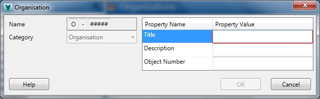
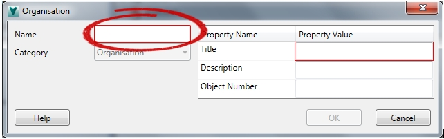
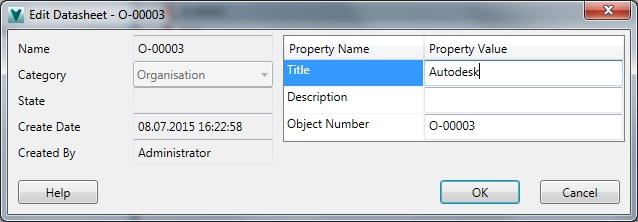

Vault QuickStart uses the custom object
"Organisation" to link documents and articles/BOMs with clients,
suppliers, etc. An organisation has no contact information,
because it can be linked to many contacts, or people.
Create
Organisations are numbered sequentially, as long
as the object numbering of this type is active:

If the numbering scheme is disabled by the
administrator you can assign manually a number or text for the
organisation naming.

Besides the Name field is the Title a required
field.
Edit
In editing mode - and in case of active numbering
scheme - you can not change the number (Name):

With an
inactive object numbering the number can be changed
manually.